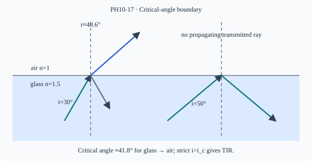

Prerequisite bridge
PH10-02
Before starting, identify the reference frame, directed rays, units and applicable geometric assumptions. Unbound prerequisites remain provisional.
Connected textbook foundation (preserved from PR #5)
2. Speed, refractive index and Snell's law
Refractive index expresses how fast light propagates in a medium compared with its speed in vacuum: n=c/v in the simplified isotropic setting. It does not indicate that light is delayed by mechanically colliding with isolated particles at the surface. For refraction at a plane interface, n_1\sin i=n_2\sin r, where both angles are measured from the normal.
A useful derivation of direction is qualitative: if n_2>n_1, then for nonzero refraction angles \sin r=(n_1/n_2)\sin i<\sin i, so r<i. The ray approaches the normal. The equation also imposes a physical domain. If the algebra requires \sin r>1, no ordinary refracted ray satisfying those assumptions exists; the boundary requires a different treatment.
Worked anchor: Light travels from air (n_1=1.00) into glass (n_2=1.50) with incident angle 30^\circ. Then \sin r=(1/1.5)\times0.5=1/3, so r is about 19.5^\circ. The result must be smaller than 30^\circ, in agreement with the direction diagram.
Build and check the model
EXTENSION/HOLD: At an interface from higher index n₁ to lower index n₂, Snell requires sin r=(n₁/n₂) sin i. Critical angle i_c=arcsin(n₂/n₁) occurs at r=90°. For i>i_c no propagating refracted ray exists in ideal lossless dielectrics; total internal reflection occurs, with an evanescent field on the other side. At i=i_c the limiting refracted direction is grazing, not the usual strict TIR condition. No critical angle of this type exists for passage lower→higher.
Worked anchor
Glass n=1.5 to air: sin i_c=2/3, i_c≈41.81°. At i=35° transmitted ray exists (sin r≈0.860); at 50° no propagating transmitted ray. In a simple fiber core must have higher n than cladding for TIR guidance.
Condition and limiting check
TIR requires both index ordering and incidence above critical angle, measured to normal; an absorbing or nearby second medium changes ideal behavior.
Misconception repair
Do not claim all rays traveling from glass to air totally internally reflect.
Reasoning diagram

Self-check before transfer
n_high=1.25, n_low=1. Find critical angle and test i=60°.
Check the reasoning
i_c=arcsin(0.8)≈53.13°; 60° exceeds it, so ideal TIR occurs.
Source and figure status
Curriculum pointer CBSE_HIGHER (comparison only); candidate scope only. Preserved chapter manuscript. Original subtopic-specific figure attached. Scientific figure and teaching-sufficiency reviews remain HOLD.